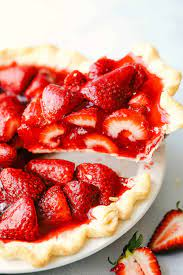

Strawberry Rhubarb Pie

Description
This strawberry rhubarb pie is a favorite springtime dessert in our house.
The filling has a sweet-tart flavor; bake in your favorite pie crust and serve with vanilla ice cream.
Ingredients
- 1 cup white sugar
- 1 pound rhubarb, cut into 1/4 inch slices
- 2 pints strawberries, hulled and quartered
- 1 recipe pastry for a 9 inch double crust pie
- 2 tablespoons butter
- 1 large egg yolk
- 2 tablespoons white sugar
Steps
- Preheat oven to 400 degrees F (200 degrees C).
- In a large bowl, mix flour and sugar.
- Add strawberries and chopped rhubarb. Toss with sugar and flour and let stand for 30 minutes.
- Pour filling into prepared pie crust. Dot top with butter, and cover with top crust. Seal edges of top and bottom crust with water.
- Apply yolk to top of pie, using a pastry brush.
- Sprinkle with sugar.Cut small holes in top to let steam escape.
- Bake at 400 degrees F (200 degrees C), for 35 to 40 minutes, or until bubbly and brown. Cool on rack.